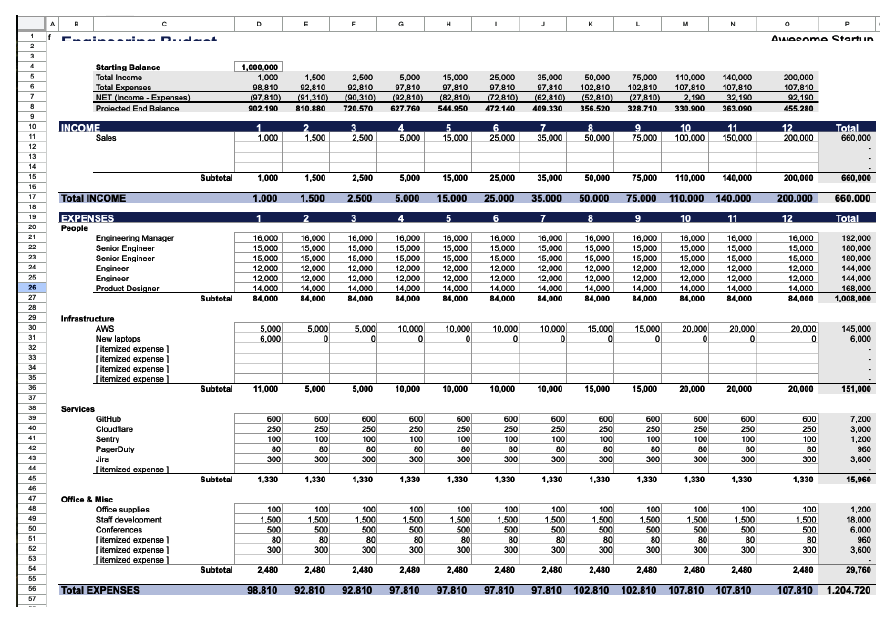

فصل ۷ · صص. ۱۲۳–۱۴۵
بودجه، هزینه و فروشندهها
Budgeting, Costs, and Vendors
Engineering Leadership: The Hard Parts, First Edition
رهبرهای مهندسی معمولاً بودجه را «مسئلهی کسبوکار» میبینند، ولی حل کردنش همان راهی است که آدم و منابع میگیرید، و در آشوب بودجه لنگری است که به برنامهریزی و اولویتبندی گره میخورد. این فصل، که صریحاً راهنمای یک غیرمتخصص است و نه مشاورهی مالی یا حقوقی، میگوید چرا بودجه اهمیت دارد، از جمله اقتصاد واحد با COGS و CAC و LTV و حاشیهی ناخالص؛ هزینههای ثابت و متغیر و پلهای؛ ساختن و پیگیری بودجه با نگاهی دقیق به هزینهی تمامشدهی نیرو و زمان جا افتادن و ریزش؛ مدیریت فروشندهها و تصمیم ساختن در برابر خریدن؛ رفتار با پیمانکارها بهعنوان بخشی از تیم؛ و اخلاق (صص. ۱۲۳–۱۴۵).
فهرست خود فصل (از فهرست مطالب کتاب)
- چرا بودجه اهمیت دارد — p. 124
- همراستایی راهبردی — p. 124
- مدیریت هزینه — p. 124
- کاهش ریسک — p. 127
- پایش عملکرد — p. 127
- بهینه کردن منابع — p. 127
- مدیریت ذینفعها — p. 128
- نوآوری و رشد — p. 129
- یادگیری سازمانی — p. 129
- مزیت رقابتی — p. 129
- فهمیدن مدیریت هزینه — p. 129
- هزینههای ثابت: پایه — p. 130
- هزینههای متغیر: بازیکنهای منعطف — p. 130
- هزینههای پلهای: هزینهی رفتن به سطح بعد — p. 130
- چه کسی پولش را میدهد؟ — p. 131
- سمت انسانی مدیریت هزینه — p. 131
- ساختن و مدیریت بودجه — p. 131
- شروع از تاریخچه — p. 132
- دستهبندی هزینهها — p. 132
- برنامهریزی نیرو و هزینههایش — p. 133
- گذاشتن هدفهایی که معنا دارند — p. 136
- ساختن قالب بودجه — p. 137
- پیگیری و مدیریت — p. 138
- یاد گرفتن از تجربه — p. 138
- مدیریت فروشندهها — p. 139
- بحث بزرگ ساختن در برابر خریدن — p. 139
- انتخاب شریکها — p. 140
- مدیریت رابطه — p. 140
- آدمها و تیمهای برونسپاریشده — p. 141
- اخلاق — p. 142
- مراقبت از آدمهایمان — p. 143
- همسایهی خوبی بودن — p. 143
- نگاه جهانی — p. 143
- نگاه به آینده — p. 144
- واقعی کردنش — p. 144
- جمعبندی: بودجه بهمثابه استراتژی — p. 144
از کتاب
مقدمه
بودجهریزی processی راهبردی است که بین جایی که هستید و جایی که میخواهید باشید پل میزند، نه فقط عددبازی، هرچند spreadsheet هم خواهد بود. نویسندهها تأکید میکنند حسابدار نیستند: روی بودجه با CFO یا تیم مالی کار کنید (ص. ۱۲۳).
از کتاب
چرا بودجه اهمیت دارد
بودجه پل بین «چقدر خوب میشد اگر…» و «واقعاً انجامش دادیم!» است (ص. ۱۲۴).
| دلیل | یعنی چه (صص. ۱۲۴–۱۲۹) |
|---|---|
| همراستایی راهبردی | خرج با اولویتهای اعلامشده میخواند؛ تجربهی مشتری نمیتواند اولویت اول باشد وقتی همه چیز خرج ابزار داخلی میشود |
| مدیریت هزینه | فهمیدن رابطهی خرج و ارزش، نه فقط برداشتن ارزانترین گزینه |
| کاهش ریسک | ذخیره برای ریسک مالی مثل رفتن بزرگترین مشتری، ریسک عملیاتی مثل خراب شدن دیتابیس، و ریسک راهبردی مثل منسوخ شدن محصول |
| پایش عملکرد | شاخصهای پیشرو و پسرو، نه متریک پوچ |
| بهینه کردن منابع | «بودجهریزی صرفاً اولویتبندی است با علامت دلار چسبیده به آن»؛ بودجهتان backlog سطح شرکت است |
| مدیریت ذینفعها | بودجه اولویتها را به سرمایهگذارها و کارکنان و مشتریها میگوید |
| نوآوری و رشد | هم بهبود تدریجی را تأمین کنید و هم شرطهای دگرگونکننده؛ هم گوجهی این تابستان و هم درخت برای بعدها |
| یادگیری سازمانی | هر چرخه یک آزمایش است |
| مزیت رقابتی | سریع پاسخ بدهید؛ در زمان درست سرمایهگذاری کنید. ساده شروع کنید، چون میشود process بودجه اضافه کرد ولی بهندرت میشود برش داشت |
کادر In Practice: داستان April (ص. ۱۲۴). تیم StudioOps ادعا میکند همکاری و منتورینگ اولویتاند، ولی بودجهی سهماههی اولش ۱۵٬۰۰۰ دلار برای licenseهای انفرادی IDE دارد، ۵٬۰۰۰ دلار برای ابزار پیگیری بهرهوری که استفاده نمیشود، هیچ چیز برای ابزار برنامهنویسی دونفره، و ۵۰۰ دلار «پیتزای فصلی» برای تیمسازی. April ابزار پیگیری را حذف میکند، license تیمی برنامهنویسی دونفره میخرد با ۸٬۰۰۰ دلار، ناهار هفتگی تیم را با ماهی ۶۰۰ دلار راه میاندازد و ۱۰٬۰۰۰ دلار برای ابزار code review کنار میگذارد.
چرا بودجه اهمیت دارد
فهمیدن سمت درآمد
رهبرهای مهندسی بهندرت صاحب درآمدند، ولی اقتصاد واحد شما را از یک مرکز هزینه به شریکی راهبردی تبدیل میکند (ص. ۱۲۵):
| مفهوم | تعریف و نمونه (ص. ۱۲۵) |
|---|---|
| بهای تمامشدهی کالا یا COGS | هزینههای مستقیم تحویل سرویس: زیرساخت، هزینهی طرفهای سوم، پشتیبانی. ماهی ۵۰٬۰۰۰ دلار AWS برای ۱٬۰۰۰ مشتری یعنی ۵۰ دلار برای هر مشتری |
| هزینهی جذب مشتری یا CAC | هزینهی به دست آوردن یک مشتری؛ featureهای نداشتهای که به ازای هر مشتری سازمانی ۵٬۰۰۰ دلار تلاش فروش تحمیل میکنند اثر دلاری دارند |
| ارزش طول عمر یا LTV | کل درآمد در طول رابطه؛ با ماهی ۱٬۰۰۰ دلار، رفتن بعد از ۱۰ ماه بهجای ۱۲ ماه ۲٬۰۰۰ دلار از LTV کم میکند |
| حاشیهی ناخالص | درآمد منهای COGS تقسیم بر درآمد؛ چیزی که برای حقوق و دفتر و قهوهساز میماند. با ۷۰٪ و هدف ۸۰٪، بهینه کردن کوئریای که ۲۰٪ زیرساخت را میخورد شاید از یک feature تازه بهتر باشد |
کادر In Practice: داستان April (ص. ۱۲۶). فروش تخفیف میدهد چون رقیبها سریعتر تحویل میدهند؛ و بعد از قطعیها churn جهش میکند. کندی رفع باگ ماهی ۳۰٬۰۰۰ دلار درآمد ازدسترفته برای PixelCurl آب میخورد، که حالا ورودی بودجه و نیروی April است.
با اقتصاد واحد، اولویتها قابلمقایسه میشوند: feature اول ماهی ۱۰٬۰۰۰ دلار از زیرساخت کم میکند و ۲ واحد به حاشیهی ناخالص اضافه؛ feature دوم قیمتگذاری سازمانی را ممکن میکند و LTV را از ۱۰٬۰۰۰ به ۲۵٬۰۰۰ دلار میبرد. استخدام یک DevOps را میشود اینطور قاب گرفت که COGS زیرساخت را ۲۵٪ کم میکند و حاشیهی ناخالص را از ۷۲٪ به ۷۶٪ میبرد، یعنی «۲ میلیون دلار به ارزشگذاری ما با ضریبهای معمول SaaS». مدیریت هزینه یعنی فهمیدن رفتار هزینهها؛ گاهی خرج بیشتر پول کم میکند، مثل نظریهی «پوتین» Sam Vimes در نوشتهی Terry Pratchett (ص. ۱۲۶).
امتحان کنید
اقتصاد واحد
باز کردن در صفحهی کامل ↗ · این شبیهسازی مدل خود vault از سازوکاری است که کتاب شرح میدهد.
چرا بودجه اهمیت دارد
بهینه کردن منابع در عمل
بلاتکلیفی تخمین در مقیاس بزرگ هم هست: همانطور که تخمین sprint ±۲۵٪ است، برای پیمانکار سهماهه چهار ماه بودجه بگذارید، و بپرسید اگر ارتقای ۵۰٬۰۰۰ دلاری ۶۵٬۰۰۰ دلار شد چه میشود (ص. ۱۲۸). با ارتقاهای عقبانداخته مثل بدهی فنی برخورد کنید؛ نرخ بهرهاش چقدر است (ص. ۱۲۸)؟
کادر In Practice: داستان April (ص. ۱۲۸). اگر تیم ۳۰٪ کمتر از واقع تخمین بزند، برنامهریزی نیرو هم به همان اندازه غلط است، پس April برنامهریزی بودجه را مثل برنامهریزی sprintِ گسترده میگرداند و روی هر دو محور اثر و تلاش عدد دلاری میگذارد.
از کتاب
فهمیدن مدیریت هزینه
هزینهها نیمی از داستاناند؛ اهمیتشان در نسبت با ارزشی است که ساخته میشود (صص. ۱۲۹–۱۳۰).
| نوع هزینه | نمونه و مدیریت (صص. ۱۳۰–۱۳۱) |
|---|---|
| هزینههای ثابت، یعنی پایه | دفتر، حقوق دائمی، بیمه، زیرساخت اصلی. زیاد بودنشان شما را خشک میکند و کم بودنشان ناتوان از رشد |
| هزینههای متغیر، یعنی بازیکنهای منعطف | cloud و SaaS بر پایهی مصرف. بین کارآمدی و اثربخشی تعادل برقرار کنید |
| هزینههای پلهای، یعنی رفتن به سطح بعد | سر آستانهها جهش میکنند: سطح بالاتر SaaS، دفتر تازه، گسترش زیرساخت؛ پیش از جهش آماده باشید |
| چه کسی پولش را میدهد؟ | هزینههای مستقیم مثل آدمها راحت تخصیص مییابند؛ هزینههای غیرمستقیم و مشترک، مثل سهم یک مشتری از زیرساخت، باید درآورده شوند، چون باید نشان بدهید سرمایهگذاریها ارزشش را داشتهاند |
سمت انسانی: فرهنگی بسازید که در آن مهندسهای ارشد هزینهی یک انتخاب معماری، مثل ابزار تازه یا هزینهی پلهای، را بخشی از برنامهریزی ظرفیت ببینند (ص. ۱۳۱).
هزینهی platform داده بیشتر متغیر است: CPU، دیسک و نگهداری داده.
?نوبت شما · دیسک ClickHouse هر ماه ۱۵٪ رشد میکند. چه کاری پیش از خریدن دیسک بیشتر انجام میدهید؟دیدن پاسخ
TTL روی partitionهای کهنه در Bronze، بررسی codec فشردهسازی، و حذف جدولهایی که کسی نمیخواند؛ و رشد را در Grafana به ارزشی که ساخته میشود گره بزنید. کتاب هزینه را در نسبت با ارزش میسنجد (صص. ۱۲۹–۱۳۱).
از کتاب
ساختن و مدیریت بودجه
حتی با وجود تیم مالی، خرجکنندهی بودجه شمایید و مسئولش هم شمایید (ص. ۱۳۱).
- از تاریخچه شروع کنید، اگر میشود دستکم سه سال: فصلها، مثل هزینههای ecommerce حول Black Friday، وابستگی به مشتریها، روند هزینهها، حادثههای یکباره، و «چرا»ی پشت عددها (ص. ۱۳۲).
- هزینهها را دستهبندی کنید: اول آدمها، یعنی حقوق پایه و پرداخت متغیر و مزایا و آموزش و سفر و پذیرایی، بعد زیرساخت، یعنی cloud و فضا و تجهیزات، و بعد سرویسها، یعنی SaaSها از CRM تا observability، ابزار استخدام، وکیل، حسابدار و امنیت (ص. ۱۳۲).
ساختن و مدیریت بودجه
برنامهریزی نیرو و هزینههایش
هزینهی تمامشدهی یک کارمند معمولاً ۱٫۳ تا ۱٫۸ برابر حقوق پایه است (صص. ۱۳۳–۱۳۴):
| جزء | اندازهی معمول (ص. ۱۳۳) |
|---|---|
| مالیات و الزامهای حقوق و دستمزد | در آمریکا حدود ۷٫۶۵٪ |
| مزایا | ۲۰ تا ۳۰٪ حقوق پایه |
| تجهیزات و license | سالی ۵٬۰۰۰ تا ۱۰٬۰۰۰ دلار برای مهندسها |
| آموزش و توسعه | سالی ۲٬۰۰۰ تا ۵٬۰۰۰ دلار |
| استخدام | کارمزد آژانس ۱۵ تا ۲۵٪ حقوق پایه، یا وقت recruiter |
| ناکارآمدی onboarding | تازهواردها تا سه ماه حدود ۵۰٪ بهرهوری دارند |
کادر In Practice: داستان April (ص. ۱۳۴). او برای سه مهندس هر کدام ۱۵۰٬۰۰۰ دلار بودجه میگذارد، یعنی ۴۵۰٬۰۰۰ دلار، ولی هزینهی واقعی نزدیک ۶۷۵٬۰۰۰ دلار است، آن هم پیش از حساب کردن وقت منتورینگ مهندسهای ارشد.
- رشد و ریزش. ریزش نیرو در مهندسی سالی ۱۰ تا ۱۵٪ است، پس تیم ۲۰ نفره سالی دو سه نفر را جایگزین میکند. هر تازهوارد در ماه اول ۱۰٪ و در ماه دوم ۵٪ از ظرفیت تیم کم میکند و در ماه سوم به آن اضافه میشود (ص. ۱۳۴).
- زمانبندی. استخدام در سهماههی چهارم سختتر است؛ استخدام دستهای وقت recruiter را کم میکند ولی گلوگاه onboarding میسازد؛ در سهماههی اول استخدام کنید تا در سهماههی سوم بهرهور باشد؛ و پنجرهی سالانهی تعداد نیرو را از دست ندهید (ص. ۱۳۴).
- سناریوها. April بهترین و موردانتظار و بدترین حالت را بودجه میگذارد، از جمله سختی پیدا کردن استعداد DevOps که به پوشش پیمانکاری نیاز دارد، بهعلاوهی وقت منتور و افت انتقال دانش (ص. ۱۳۵).
| جدول ۷-۱. بازههای تخمینی حقوق (ص. ۱۳۵) | تخمین هزینه | ملاحظهها |
|---|---|---|
| ارشد | ۱۸۰٬۰۰۰ تا بیش از ۳۰۰٬۰۰۰ دلار | رهبری فنی، معماری، منتورینگ |
| میانی | ۱۲۰٬۰۰۰ تا ۱۸۰٬۰۰۰ دلار | اجرای اصلی، استقلال رو به رشد |
| تازهکار | ۸۰٬۰۰۰ تا ۱۲۰٬۰۰۰ دلار | توان بالقوهی بالا، نیازمند سرمایهگذاری، خط لولهی آینده |
استارتاپها شاید برای سرعت به سمت ارشد بچرخند و شرکتهای جاافتاده روی تازهکارها سرمایهگذاری کنند. تیم ارشد-سنگینِ April لایهی میانیای را ندارد که به رشد تازهکارها کمک میکند (ص. ۱۳۵). هزینههای پنهان: استخدام بد میتواند دو سه برابر حقوقش آب بخورد، پس ۱۰ تا ۱۵٪ اضافه بودجه بگذارید؛ نقشهای کلیدی سه تا شش ماه طول میکشند؛ پیشنهادهای رقابتی شاید ۱۰ تا ۲۰٪ بالاتر از بودجه بخواهند؛ و صندوقی برای نگهداشت نیرو داشته باشید (صص. ۱۳۵–۱۳۶).
پروندهی کسبوکاری نیرو استخدام را سرمایهگذاری قاب میگیرد: درآمد ممکنشده، یعنی «X دلار درآمد میآورد»؛ هزینهی فرصت، یعنی «تأخیرش launch را X ماه عقب میاندازد»؛ هزینهی اجتنابشده، یعنی «بدون آن X دلار خرج پیمانکار و قطعی میکنیم»؛ و سلامت تیم، یعنی «نرخ فعلی اضافهکاری پایدار نیست» (ص. ۱۳۶).
اجرا کنید: آزمایش برنامهی نیرو قاعدههای کتاب دربارهی هزینهی تمامشده و جا افتادن و ریزش را روی استخدام سه مهندس به شکل دستهای یا پلکانی به کار میبرد.
ساختن و مدیریت بودجه
هدف و قالب و پیگیری و یادگیری
- هدفها به بودجه و سنجه نیاز دارند، چه مطلق مثل «به ۱۰ میلیون دلار درآمد برسیم» و چه نسبی مثل «سریعتر از بازار رشد کنیم» (ص. ۱۳۶).
- قالب هزینهها و در صورت ربط درآمد را ماه به ماه نشان میدهد؛ نسخههای بهترین و موردانتظار و بدترین حالت را آماده کنید (صص. ۱۳۷–۱۳۸).


- پیگیری: هزینههای مهم مثل نیرو و cloud را ماهانه مرور کنید و برای cloud هشدار بودجه بگذارید؛ بازبینیهای راهبردی فصلی و بودجهی تازه سالانه (ص. ۱۳۸). انحرافها را توضیح بدهید، یعنی قیمت و حجم و زمانبندی و کارآمدی، و فراتر رفتن از بودجه را اعلام کنید؛ پنهان کردنش هیچوقت جواب نمیدهد. به هر مخاطبی سطح درست جزئیات را بدهید (ص. ۱۳۸).
- یادگیری: بعد از هر چرخه بپرسید چه چیزی کار کرد، چه چیزی شکست خورد، چه چیزی غافلگیرتان کرد و چه یاد گرفتید (صص. ۱۳۸–۱۳۹).
از کتاب
مدیریت فروشندهها
فروشندهها حالا شریکهای راهبردیاند که میتوانند جلو ببرندتان یا نگهتان دارند (ص. ۱۳۹).
- ساختن در برابر خریدن. هستهی کسبوکارتان را بسازید، یعنی چیزی که مزیت رقابتی میدهد، و بقیه را بخرید؛ راهحل سفارشی سالها نگهداری میآورد. دیتابیس خودتان، مگر شرکت دیتابیس باشید، یا scheduler یا احراز هویت و رمزنگاری خودتان «تجمل است، نه الزام» (صص. ۱۳۹–۱۴۰).
کادر In Practice: داستان April (ص. ۱۳۹). سیستم CI/CD خانگیای که سالها پیش ساخته شده ۲۰٪ وقت دو مهندس ارشد را میخورد. deployment مزیت PixelCurl نیست، موتور رندر انیمیشنش مزیت است، پس April به یک platform تجاری مهاجرت میکند و آدمهای ارشد را برای منتورینگ آزاد.
- انتخاب شریکها مثل استخدام است: توانمندی، کارنامه، ثبات، تناسب فرهنگی، چیزهای حتماًلازم در برابر خوباستباشد، ماندگاری و هزینه. قرارداد خوب تعریف میکند چه میگیرید، موفقیت چطور سنجیده میشود، و وقتی چیزی خراب شد چه میشود (ص. ۱۴۰).
- مدیریت رابطه: جلسه و بازبینی منظم؛ یک شراکت، نه یک معامله (ص. ۱۴۰). بازبینی فصلی فروشندههای April نشان میدهد سه مهندس جداگانه برای ابزارهای مشابه تحلیل کد پول میدهند (ص. ۱۴۱).
- آدمها و تیمهای برونسپاریشده. شریکها ممکن است مهارت و انطباق را بر فرهنگ و رشد مقدم کنند. هیچوقت process اصلی استخدامتان را برونسپاری نکنید؛ بگذارید شریکها آدم پیدا کنند و بعد خودتان مصاحبه بگیرید: اعتماد کنید ولی وارسی هم بکنید. با مهندسهای بیرونی مثل بخشی از تیم رفتار کنید، یعنی ۱-۱ و standup و بحث معماری و ساعتهای جلسهی همپوشان، که James جلسههای صبح وقت شرق آمریکا میگذاشت تا با اوکراین همپوشانی داشته باشد، و مسائل حقوقی و مقرراتی و حریم خصوصی داده را بسنجید؛ هر چقدر پول بدهید همانقدر میگیرید (صص. ۱۴۱–۱۴۲).
کادر In Practice: داستان April (ص. ۱۴۱). پیمانکار موقت DevOps او در standupها و بحثهای معماری شرکت میکند و با تازهکارها pair میکند، و مسئلهی حیاتیای در زیرساخت پیدا میکند که آدمهای ارشدِ در سیلو ندیده بودند.
stack ما تقریباً همهاش open source و self-hosted است، و این خودش یک تصمیم ساختن در برابر خریدن است.
?نوبت شما · چرا ClickHouse را self-host میکنید و چه هزینهای در این تصمیم پنهان است؟دیدن پاسخ
هزینهی license نیست ولی زمان مهندس برای ارتقا، backup، تنظیم Keeper و on-call هست. کتاب میگوید هستهی کسبوکار را بسازید و بقیه را بخرید؛ پس بپرسید نگهداری warehouse مزیت رقابتی شماست یا نه (صص. ۱۳۹–۱۴۱).
از کتاب
اخلاق
کار درست را بکنید چون درست است، یا دستکم برای اینکه به برندتان آسیب نزنید (صص. ۱۴۲–۱۴۳).
| حوزه | چه میپرسد (صص. ۱۴۳–۱۴۴) |
|---|---|
| مراقبت از آدمهایمان | حقوق منصفانه، رشد، شرایط امن. April میبیند تازهکارها ۳۰٪ زیر بازار حقوق میگیرند به بهانهی «یاد گرفتن سر کار» و برای اصلاح حقوق تا سطح بازار و وقت منتورینگ بودجه میگذارد |
| همسایهی خوبی بودن | اثر زیستمحیطی و اجتماعی |
| نگاه جهانی | به رسوم محلی احترام بگذارید و در همان حال استانداردهای اخلاقی و کار را یکدست نگه دارید |
| نگاه به آینده | هوش مصنوعی و automation، مالکیت فکری، حریم خصوصی، پایداری |
| واقعی کردنش | آموزش و امنیت برای حرف زدن؛ James برنامهی سناریومحور Microsoft را دیده بود. بپرسید: از دیدن این تصمیم روی صفحهی اول فردا سربلند بودیم؟ |
از کتاب
جمعبندی: بودجه بهمثابه استراتژی
شاید بودجه و هزینه و فروشندهها دلیل رهبر شدنتان نبوده باشد، ولی آوردن دقت مهندسی به آنها شرایطی میسازد که چشمانداز فنی تحویل شود، و این مهارتها برای individual contributorهای ارشد هم مهماند (صص. ۱۴۴–۱۴۵).
مرور
بدهبستانها در یک نگاه
| انتخاب | چه میدهد | چه میگیرد |
|---|---|---|
| هزینهی ثابت بیشتر | پایهی باثبات | خشکی |
| سرویسهای متغیر بر پایهی مصرف | انعطاف؛ مقیاس گرفتن با تقاضا | هزینه با مصرف بالا میرود؛ پیشبینیپذیری کمتر |
| رد شدن از یک پلهی هزینه | سطح بعدی ظرفیت | جهش خرج پیش از رسیدن ارزش |
| استخدام دستهای | کارآمدی recruiter | گلوگاه onboarding؛ افت بزرگتر بهرهوری |
| تیم ارشد-سنگین | سرعت و استقلال | هزینه؛ خط لولهی ضعیف تازهکارها بدون لایهی میانی |
| ساختن در خانه | کنترل؛ دقیقاً اندازه | سالها نگهداری؛ دور شدن از هسته |
| خریدن سرویسهای کالایی | تمرکز روی هستهی کسبوکار | وابستگی به فروشنده |
| رفتار با پیمانکارها مثل همتیمی | دانش و فرهنگ مشترک | وقت مدیریتی بیشتر |
مرور
نکتههای کلیدی
- بودجهریزی همان اولویتبندی است با علامت دلار چسبیده به آن؛ همان تفکر اثر در برابر تلاش فصل ۶ در مقیاس بزرگتر (ص. ۱۲۷).
- خرجتان باید با اولویتهای اعلامشدهتان بخواند؛ اگر نمیخواند، یا استراتژی را عوض کنید یا خرج را (ص. ۱۲۴).
- اقتصاد واحد تصمیم فنی را به تصمیم کسبوکاری تبدیل میکند: ماهی ۵۰٬۰۰۰ دلار AWS برای ۱٬۰۰۰ مشتری یعنی ۵۰ دلار COGS برای هر مشتری؛ حاشیهی ناخالص برابر است با درآمد منهای COGS تقسیم بر درآمد (صص. ۱۲۵–۱۲۶).
- بدانید هزینهها چطور رفتار میکنند: ثابت، متغیر، و پلهای که سر آستانهها جهش میکنند؛ و اینکه چه کسی پولش را میدهد (صص. ۱۳۰–۱۳۱).
- هزینهی تمامشدهی یک نفر ۱٫۳ تا ۱٫۸ برابر حقوق پایه است؛ تازهواردها اول ظرفیت تیم را کم میکنند؛ برای ۱۰ تا ۱۵٪ ریزش و استخدامهای ناموفق بودجه بگذارید (صص. ۱۳۳–۱۳۶).
- بودجهی بهترین و موردانتظار و بدترین حالت را آماده کنید؛ هزینههای بزرگ را ماهانه مرور کنید، انحرافها را توضیح بدهید و فراتر رفتن از بودجه را اعلام کنید (صص. ۱۳۷–۱۳۸).
- فقط هستهی کسبوکارتان را بسازید؛ سرویسهای کالایی را بخرید؛ هیچوقت process اصلی استخدامتان را برونسپاری نکنید؛ و با پیمانکارها مثل همتیمی رفتار کنید (صص. ۱۳۹–۱۴۲).
- اخلاق: حقوق منصفانه و رفتار شایسته؛ از این تصمیم روی صفحهی اول فردا سربلند بیرون میآمدید (صص. ۱۴۲–۱۴۴)؟
تمرین
خودتان را بسنجید
پرسشها و پاسخها مال vault است و از روی یادداشتهای بالا نوشته شده؛ پاسخها به صفحهی چاپی کتاب ارجاع میدهند.
۱کتاب بهینه کردن منابع را چطور خلاصه میکند؟دیدن پاسخ
«بودجهریزی صرفاً اولویتبندی است با علامت دلار چسبیده به آن»؛ بودجهتان backlog سطح شرکت است (ص. ۱۲۷).
۳هزینهی پلهای چیست؟دیدن پاسخ
هزینهای که بهجای رشد خطی سر یک آستانه جهش میکند، مثل سطح بالاتر SaaS یا دفتر تازه یا گسترش زیرساخت (ص. ۱۳۰).
۴چرا ۴۵۰٬۰۰۰ دلار April برای سه مهندس به حدود ۶۷۵٬۰۰۰ دلار رسید؟دیدن پاسخ
هزینهی تمامشده، یعنی مالیات و مزایا و تجهیزات و آموزش و استخدام و onboarding، ۱٫۳ تا ۱٫۸ برابر حقوق پایه است (صص. ۱۳۳–۱۳۴).
۵با قاعدهی سرانگشتی کتاب، وقتی یک نفر تازه میآید سر ظرفیت تیم چه میآید؟دیدن پاسخ
ماه اول ۱۰٪ و ماه دوم ۵٪ افت میکند، و تازهوارد از ماه سوم به ظرفیت اضافه میشود (ص. ۱۳۴).
۷چرا هیچوقت نباید process اصلی استخدام را برونسپاری کرد؟دیدن پاسخ
شریکها شاید بهجای فرهنگ و رشد برای مهارت و انطباق بهینه کنند؛ بگذارید آنها آدم پیدا کنند ولی از مصاحبههای خودتان ردشان کنید؛ اعتماد کنید ولی وارسی هم بکنید (صص. ۱۴۱–۱۴۲).
مکمل
فراتر از کتاب
مکمل vault، نه از متن کتاب.
- ضریبهای ارزشگذاری SaaS با نرخ رشد و شرایط بازار خیلی فرق میکنند؛ «۲ میلیون دلار با ضریبهای معمول SaaS» در کتاب (ص. ۱۲۶) یک نمونه است، نه قاعده.
- قاعدهی ۴۰ یعنی نرخ رشد بهعلاوهی حاشیهی سود دستکم ۴۰، سنجهی سرانگشتی رایج سلامت SaaS است که تیمهای مالی شاید کنار حاشیهی ناخالص به کار ببرند.
- نسبتهای هزینهی تمامشده خیلی به کشور بستگی دارند: عدد مالیات حقوق در کتاب برای آمریکاست (ص. ۱۳۳). این آزمایش از قاعدههای سرانگشتی کتاب با حقوقهای ساختگی استفاده میکند.
قدمهای بعدی
ادامه بدهید
اجرا کنید
سه استخدام مهندسی واقعاً چقدر آب میخورند و در سال اول چقدر اضافه میکنند؟ اسکریپت قاعدههای سرانگشتی کتاب دربارهی هزینهی تمامشده را روی سه استخدام ۱۵۰٬۰۰۰ دلاری April به کار میبرد و بعد استخدام هر سه با هم را با استخدام پلکانی مقایسه میکند، با همان عددهای جا افتادن کتاب.
cd books/engineering-leadership-the-hard-parts/lab/07-headcount-plan
python3 headcount_plan.pyپیوندها
- اجرا کنید: برنامهی نیرو؛ هزینهی تمامشده و ظرفیت سال اول سه استخدام، به شکل دستهای در برابر پلکانی، با قاعدههای جا افتادن و ریزش کتاب.
- فصلهای مرتبط: فصل ۶: تحویل محصول و کد که اثر در برابر تلاش و تخمین را دارد، فصل ۴: ساختن تیمهای منسجم که بزرگ شدن در زمان درست را میگوید، فصل ۸: اصول و استراتژی فنی که انتخاب فناوری کسلکننده را میگوید، و فصل ۱۰: متریکهایی که مهماند که شاخصهای پیشرو و پسرو را دارد.